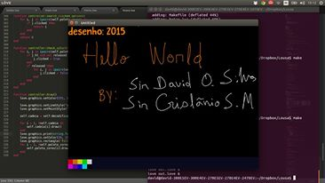

Um estudo sobre evasão na UFC-QUIXADÁ
O Problema da Evasão A evasão escolar é um problema complexo, vários fatores podem influenciar na decisão do aluno evadir, como: problemas pessoais

#Analytics, #BigData,#DataMining, #DataScience,#DeepLearning #Statistics #ArtificialIntelligence #EducationScience
Blog PessoalO Problema da Evasão A evasão escolar é um problema complexo, vários fatores podem influenciar na decisão do aluno evadir, como: problemas pessoais
Nesse post iremos mostrar a aplicação, Quadro Compartilhado Usando Lua. Para mais informações leia mais em nosso blog pessoal
